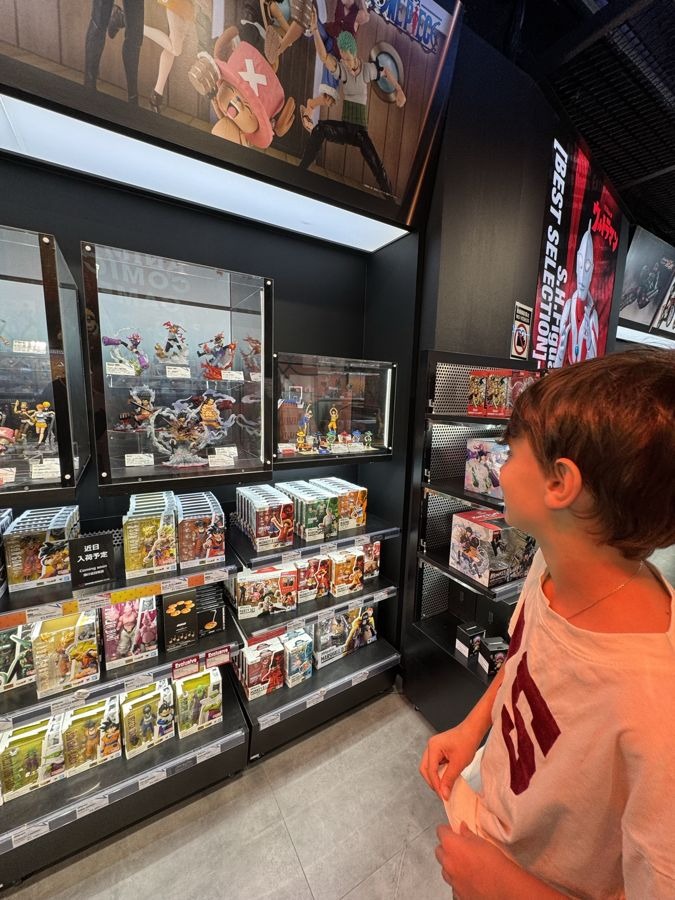
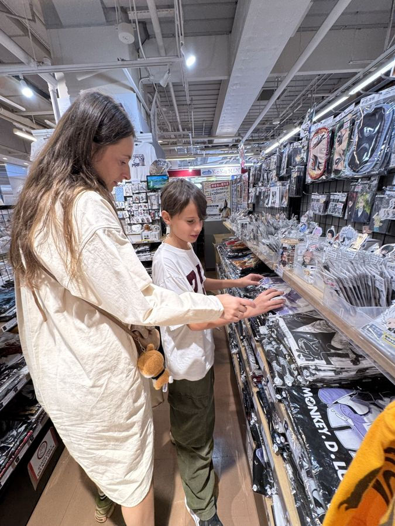
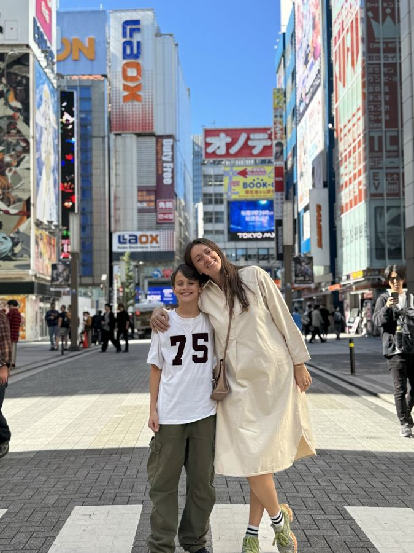
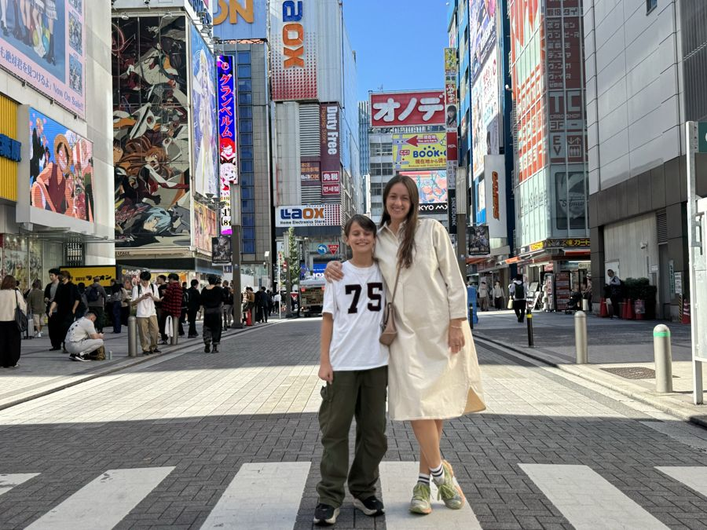
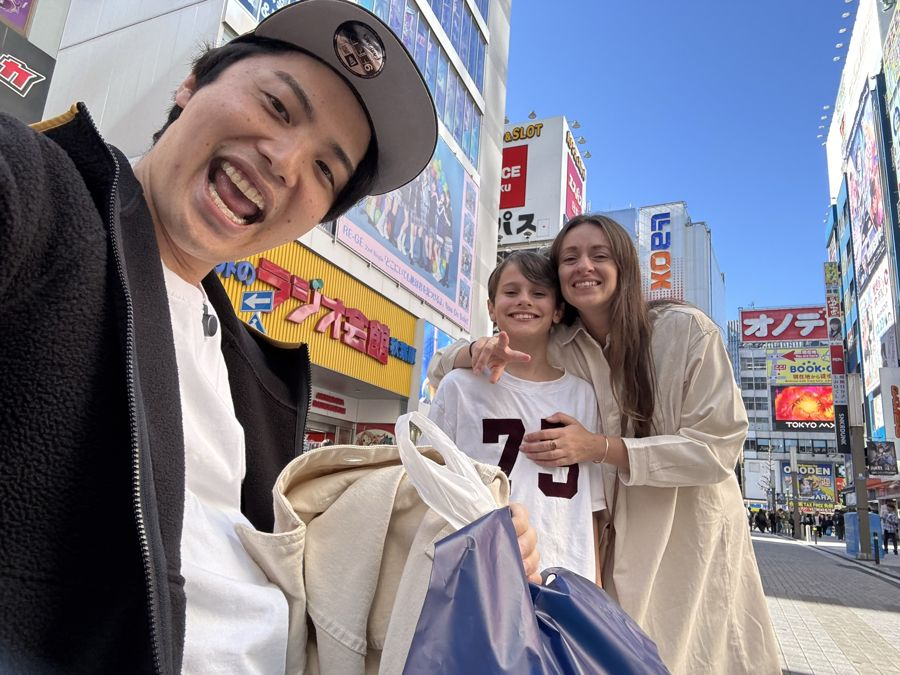
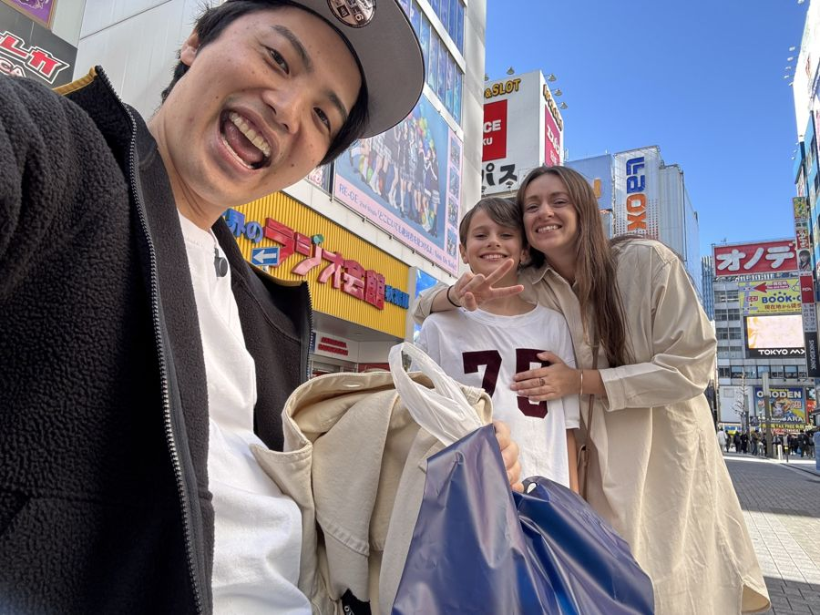
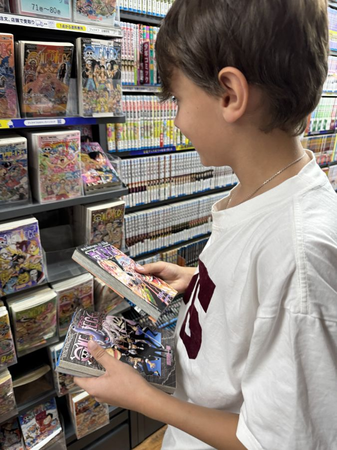
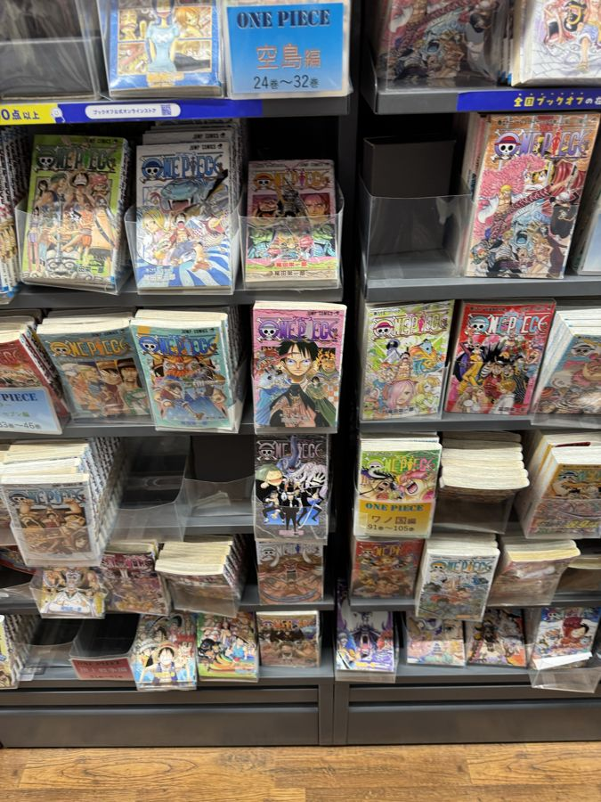
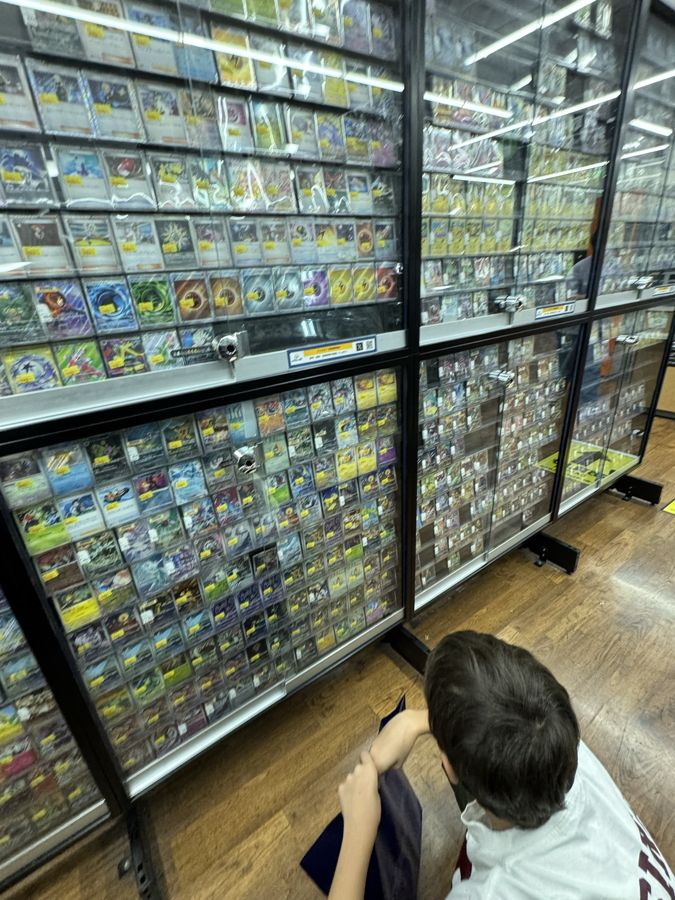

このツアーの話
- デンマークから来た親子とアキバでツアーをした
- ポケモンセンターで30周年記念パックを10パック買った
- リズムゲームを子どもに教え、短時間で上達した
- カードの状態表示を店員と一緒に確認した
ユウキが、買い物かゲームセンターかを尋ねる。母親（Yulia）の了解を得て、目を閉じた息子（Stefan）に『デスノート』1巻をサプライズで渡す。息子は前日にポケモンカードのパックを買っていた（シャイニーの話も出る）。ユウキは『アニメを約2000本見た。趣味を仕事にした』と話し、好きなキャラクターはLだと確認し合う。
L以外のキャラはあまり好きではない、息子の一番好きなのはL、という話。母親は『これから一緒にアニメ（作品名は聞き取りが不確か）を見る』と息子に約束した。日本では、アニメ・マンガの話題で息子がすぐ人と打ち解けると言う。ユウキは自分が日本語をオンラインで教えていると話し、ひらがな・カタカナ（各約50字）と漢字（数万字、日本人は2〜3千字）を説明した。
息子は英語版で『ワンピース』（「225」と話している。ワンピースの単行本は100巻台前半なので、巻数ではなく話数の聞き違いの可能性が高い）、『呪術廻戦』、『僕のヒーローアカデミア』（最初の20巻）を読んでおり、『デスノート』はマンガの方が良いと言う。好きなアニメは呪術廻戦、チェンソーマン、鬼滅の刃など。家では黒い犬とオレンジの猫を飼っていて、ユウキは動物カフェも勧めた。
飼っている犬と猫の話から、家族へのお土産の話になる。妹と姉への贈り物は用意済みで、スポーツ好きの兄と父には、おやつやビールが候補に挙がる。デンマークでは、16歳以上の人が買えば未成年でもビールを飲める、という話をゲストがした。
ユウキがゲストの食べ物の好みを聞く。ゲストは寿司とラーメンが好きで、回転寿司で10〜20皿食べ、ラーメンは東京の各地で食べていると答える。ワンピースの好きなキャラはウソップやコビーが挙がる（発言者は不確か）。息子はエースが好きで、悪役ではクロコダイルが好きと答える。
ワンピースのキャラクター好みの深掘り後、少年漫画とは何かを説明。ドラゴンボール、呪術廻戦、ワンピースなどの例を挙げ、スポーツアニメ（ハイキュー、ブルーロック）やe-sportsについて質問。『テニスの王子様』の話も出る。
息子が、姉はテニスが上手く同年代でデンマークの上位だと話し（順位の表現は聞き取りが不確か）、母親は娘が背が高いと言う。ツアー前の確認事項（トイレ、服装）後、写真のInstagram投稿許可を得る。予算管理の重要性を確認し、息子がすでに10,000円をポケモンカードに使ったことが判明。
呪術廻戦などアニメ好みの話から、新宿の等身大ゴジラ像を見たことを確認。ロボット・メカについての好みを確認後、ワンピースのキャラクター（チョッパー）の話題に。ユウキがフィギュアの棚をいつか作りたいかと息子に聞き、母親はまだ無いがほしがっていると答える。ハンターハンターやジョジョの話も出る。
ユウキがデンマーク人母親に仕事について質問。母親はデンマークへの留学を希望する人を世界各地でサポートし、大学とのパートナーシップを担当していると説明。11歳の息子ステファンは6年生だが8年生の学年に飛び級しているらしい。将来は宇宙ステーションで、地上から宇宙にいる人を支援する仕事に就きたい。父親はデンマークでメトロ（人が運転する）に関わる仕事をしている。


日本の電車システムについて。ゲストの父親は鉄道の信号・制御系の仕事とも話す（聞き取りが不確か）。日本の電車は進んでいると評価されるが、新幹線にはまだ乗っていない。乗ったのはJRの緑の線。夫は日本に来たことがない。アニメ関連のT-シャツ（ワンピース、JJK）選びについて話題を広げている。
ユウキが予算を忘れていないかと言い、息子が祖父母からお金をもらったかと尋ねる。ヒロアカや進撃の巨人（1巻を読んだがグロいと話す）を紹介し、デンマークは現金を使わずデビットカードやアプリが主流かと聞く。「ありがとう」「すみません」といった基本的な日本語を客に教える。
「すみません」の発音練習。ポケモンセンターで買ったカードを渋谷で買ったと確認。渋谷の混雑と傘の話になり、日本では雨が一滴降ると皆が一斉に傘を差すという話が出る（聞き取りは不確か）。デンマークの雨の話もある。通りで記念写真を撮影し、日本とデンマークの文化の違いについてのインタビューを始める。
日本とデンマークの電車の静かさの違い（「5倍」という数字は聞き取りが不確か）、サービス文化の違い（両手で物を渡す習慣）について話す。日本の物価はユーロ圏より安いという話も出る。息子は、母が自分に10,000円を借りていると話す。





ポケモンセンターで30周年記念パックを含む10パック購入。デンマークではポケモンカード（特に日本版）が稀。学校では毎週金曜日に友達とカードを交換・トレードして楽しむ。
親はアニメ知識がないが子供たちは詳しい。日本のギャンブルの抜け穴（景品として金を受け取り、買い取り店で売却する仕組み）と警察による産業管理の話。デンマークにもカジノはあるが、ギャンブルをする人はほぼいない。中古マンガは安価で購入可能。
秋葉原のマンガ店で、絵本・ポケモン・学習用など様々な種類を品揃え。中古マンガは100円（約5クローネ）。ワンピース第1巻なども安価。選択肢が豊富で圧倒的。
ワンピース（ワノ国、エッグヘッド、ホールケーキアイランド）の話が出る。日本で買ったiPhoneはカメラの音を消せないが海外では消せ、日本に戻ると音が出る、と話す（日本政府は信用していない、という冗談も）。マンガの巻が順番に並んでいる話や、英語のマンガは少ないという案内もある。


英語の本が多い書店に行く話や、何かが4〜5倍高いという話（何の価格かは不明）、デンマークで高く日本で安いもの、レトロゲームの店に入る話。
ポケモンゲーム（Sword、Shield、Violet、Scarlet、ZA）の中古の値段の話。箱なしは安く、ZAは高い（金額は聞き取りが不確か）。ゲームは多言語対応で英語でも遊べる。
アーケード(クレーンゲーム)の景品がもとは非売品で、取った人が持ち込んで転売するため店ごとに値段が違うと説明している。ポケモンカードは同じ紙でも高いものと安いものがあるという話も出る。
ポケモンカードに10万円級の高値のものがあり、投資目的で買って転売する人もいると話している。最高額は20億円のピカチュウのカードと言うが、金額は聞き取りが不確か。後半は、コンビニが24時間営業であることに触れている。
